Differentiable physics, N3 and N4: interaction terms and a per-site heating threshold
Splitting each heating term of the convex model between the first and second half of each hour band (for example 00:00 to 03:00 against 03:00 to 06:00) lowered its day-ahead error by about 0.04 percentage points of substation capacity (97.5% interval 0.014 to 0.070), at all 5 substations in both years. The error is measured after a Kalman filter that corrects the forecast using its recent errors. The convex model is the demand model of each Primary substation (a substation that steps the voltage down for the local distribution network). Experiment 111, the sixth part of the differentiable-physics (DP) series, chose it as the series' candidate and called it GAM-K. Every number here uses observed past temperature, not weather forecasts.
The gain is a temperature-dependent shape of the day more than a heating effect, and the gain
label rests on D5. Two placebo splits of the same size gain nothing, but about 38% of the gain
appears on warm rows where every heating term is zero. Without D5 the estimate is -0.0296, which is
small gain (see Checks). Letting heating or lighting differ between weekdays and weekends adds
nothing: the interval of the weekday split excludes a gain larger than 0.006 points.
Choosing the heating threshold separately for each substation did not clearly help (-0.012 points, interval spanning zero). The heating threshold is the temperature below which heating demand starts; the model uses 15.5 degrees C. The profile minimum lies below 15.5 degrees C at 4 of 5 substations, but only D10 passes the rule that allows a threshold to be printed, and D10's reads "12 degrees C or lower" because its minimum sits at the edge of the 12 to 19 degree grid.
The verdict is partly supported (N3 gain, N4 tie). Audit triggers 2, 4, and 7 fired. An
Opus audit has run, and its findings are triaged under Checks.
We fitted GAM-K's convex model per substation at 4 yearly cuts, froze each fit for the year after its cut, and corrected its day-ahead forecast with the Kalman filter. The base model (B0) was compared with variants of it, called arms, that add interaction terms (N3) or a per-site threshold (N4). The tuning year chose the penalty weights and filter settings, the replicate year checked the sign, and the scored year decided. A third planned change, N13 (a mix of PV panel orientations), was dropped because experiment 73 and experiment 77 found the mix unidentified or immaterial.
Terms
- Points: percentage points of a substation's effective capacity. A heating slope is in points per 10 degrees C below the threshold.
- B0 and B0-K: GAM-K's convex model (24-month window, no drift, pinned PV capacity, ridge 0.1)
without and with the Kalman filter of recent errors. The suffix
-Kalways means "after the filter". - T1, T2, T3, T-all: B0 with each heating column split by day type (T1: weekday against Saturday, Sunday, and bank holiday), each heating column split by half of its hour band (T2: 00 to 03 against 03 to 06 local time, 06 to 08:30 against 08:30 to 11, 11 to 13:30 against 13:30 to 16, 16 to 20 against 20 to 24), each lighting ramp split by day type (T3), or all three together (T-all, where each heating column splits four ways). A difference penalty ties the pieces towards each other, and a weight lambda sets its strength.
- H-site: B0 with the heating hinge at the threshold, from 12 to 19 degrees C in 0.5 degree steps, that minimises the training loss at each substation and cut.
- Effective nats: a loss difference over 2 times the noise variance times tau, where tau (21.4 here) is the factor by which autocorrelated noise inflates the variance of a heating slope.
Figures
Figure 1 shows T-all-K ahead of B0-K by 0.039 points, with the interval wholly below zero and the replicate year matching. The gain survives B0's filter settings (the control row) and is about three times larger after the filter than before. The per-site threshold's interval spans zero. T2 (the half-band split alone) carries the whole gain, but see Checks for what that gain is.
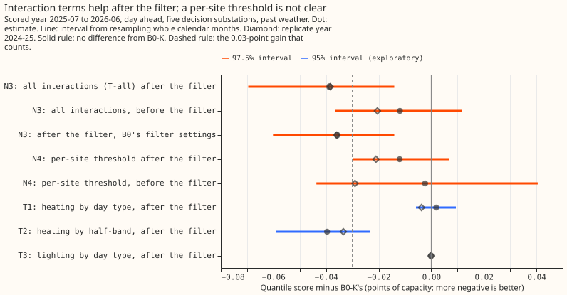
Figure 2 shows every arm's score beside the references. The filtered convex models score between 2.22 and 2.26 pooled over the 5 substations. Lagless XGBoost with the filter scores 2.50, the manual heuristic 3.49, and climatology 4.07.
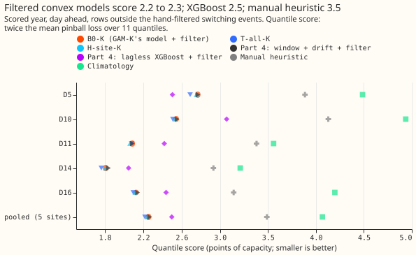
Figure 3 shows the gain sitting in the morning and evening bands, and in winter. T-all-K gains 0.066 points in the morning and 0.061 in the evening, 0.022 at night, and loses 0.004 at midday. T2-K (the half-band split alone) carries the pattern, and T1-K and T3-K are near zero.
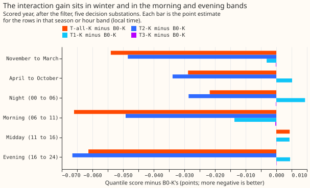
Figure 4 shows each substation's loss over the heating thresholds at the scored cut. D5 and D10 bottom out at the 12 degree edge, D11 at 12.5, D16 at 13.5, D9 at 14.5, and D14 at 15.5. The loss at 15.5 degrees is 39 effective nats above the minimum at D10, 15 at D11, 8 at D5, 6 at D16, and 0 at D14.
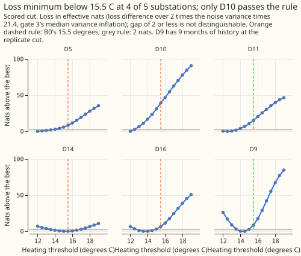
Figure 5 shows gate 3, the synthetic test of the threshold rule. The 80% interval covered the true threshold in 88 of 100 synthetic substations, and the median interval width was 3.0 degrees C. The arg-min sat at a grid edge in 32 of 100 draws, although every true threshold lay between 12.5 and 18.5 degrees C, so the gate never tested recovery at the 12 degree edge where D10 sits.
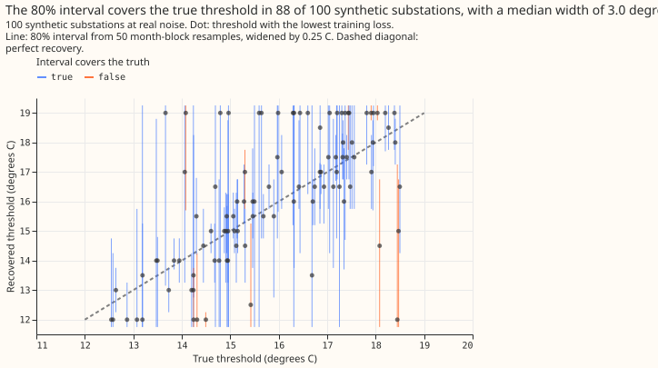
Figure 6 shows gate 2, the synthetic test of the interaction terms. With a real interaction sized to a 0.03 point gain, T-all beat B0 in 80 of 100 draws. Without one, T-all lost 0.006 points on average. The real interaction in this gate is weekday against weekend only, so the half-band split that carries C1 had no positive control, and the pass test counts the draws where T-all wins (91 of 100 pass at lambda 10,000 on a mean gain of 0.0019). It passed at exactly 80 of 100.
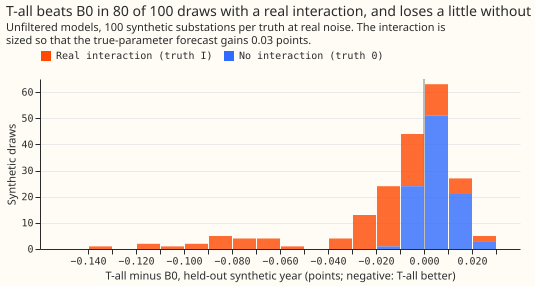
Checks
- Median minus mean forecast, per site: 0.000 points at every site for every arm, by construction, because the spread of each arm is centred on its median.
- Mean-forecast error beside each contrast: C1's mean absolute error of the mean forecast changed by -0.076 points (replicate -0.069), the same sign as its quantile score. C2's changed by -0.023 (replicate -0.034).
- Triggers fired: 2, 4, and 7 of the seven in the
ml-experimentskill; 1, 3, 5, and 6 did not fire. The Opus numbers review and audit (two independent runs) reproduced every number and changed no label, and its findings are triaged here.- Trigger 4 fired. Without D5, C1 is -0.0296 (97.5% interval -0.0537 to -0.0106), above the
-0.03 that a
gainneeds, so C1 would readsmall gainand the verdictsmall gain. Thegainlabel therefore rests on D5, the substation with the largest gain (-0.080 against a median of -0.036), and on an estimate that clears the threshold by 0.009 points. The 97.5% interval's upper end is -0.014, under half the threshold. Without any other substation, C1 stays again. The report script now recomputes the label for each leave-one-out set. - Trigger 2 fired four times. The plan predicted the opposite of each of these: gate 3 passed; D10 passed the printing rule; T2's unfiltered gain was a third of its filtered gain (-0.013 against -0.040) where at least twice was predicted; and C2's replicate year is negative at 5 of 5 sites where at most 3 was predicted. The third has the tested explanation in the next bullet.
- Trigger 7 fired because a
gainwould change GAM-K's base on one year plus a replicate at the screening tier.
- Trigger 4 fired. Without D5, C1 is -0.0296 (97.5% interval -0.0537 to -0.0106), above the
-0.03 that a
- What the T2 gain is. Two placebo splits with T2's column count, penalty, and lambda (even
against odd local half-hours, and even against odd days; every arm through B0's filter settings,
e00114_placebo.py) give -0.0008 and +0.0024 against T2's -0.0370 in the scored year, and -0.0007 and +0.0011 against -0.0348 in the tuning year. So extra columns do not explain the gain. Splitting the scored year by temperature, T2-K minus B0-K is -0.069 on warm rows (20% of rows, all four smoothed temperatures at or above 15.5 degrees C, so every heating column is zero) and -0.029 on cold rows (all four below it). Unfiltered, T2 minus B0 is -0.065 on warm rows and +0.0075 (worse) on cold rows. About 38% of the filtered gain, and all of the unfiltered gain, therefore arrives through the refitted daily profile and not through a heating slope. A likely mechanism is that the profile no longer averages cold-day and warm-day shapes; the experiment did not test that. The unfiltered gain is also an April-to-October gain (T2 minus B0 is +0.017 from November to March), which is why the filtered gain was three times the unfiltered one. - Gate margins and limits. Gate 2 passed at exactly 80 of 100 draws, and its real interaction has no half-band component, so T2 had no positive control (the truth-0 run is its only null control). Gate 3 passed on the margin on three criteria: median width 3.0 against at most 3.0, placebo recovery 0.70 against at least 0.70, and recovery of far thresholds 0.64 against at least 0.60.
Substation cards
Provisional: fitted to past weather on a screening run. One card per decision substation shows B0's daily profile by day type, holiday and Christmas effects, the loss against heating threshold, B0's heating slope by hour band, T-all's heating slope by half-band and day type, B0's thermal-inertia mix, the lighting terms, the solar capacity, and the filter's daily level and anomaly over the scored year. The transient anomaly is near zero at day-ahead leads, so its panel is flat. D9 has 9 months of history at the replicate cut.
Heating slopes are weakly identified at real noise levels (experiment 113); compare across substations with care. Do not rank substations by their heating slopes. The fitted capacities carry no interval and are not measurements.
A threshold is printed only for D10: 12 degrees C or lower (80% interval 11.75 to 12.75), because the grid starts at 12 degrees C and gate 3 never tested recovery at that edge. The other substations read "threshold not identified at this substation".
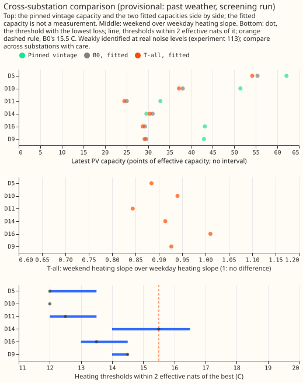
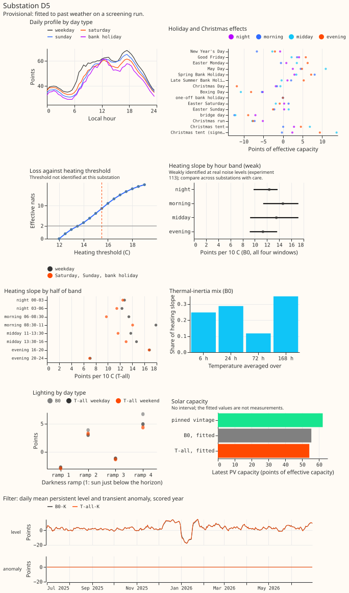
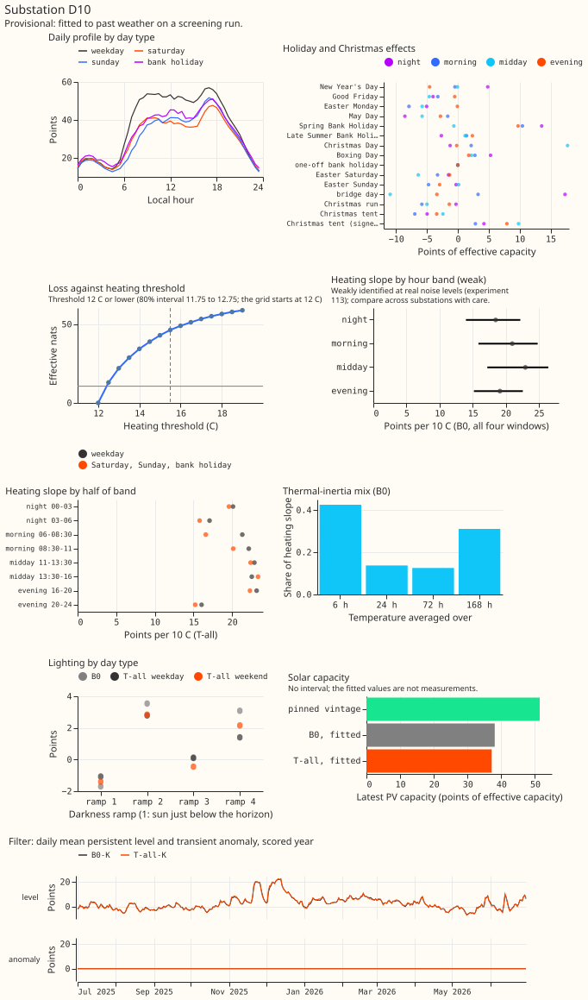
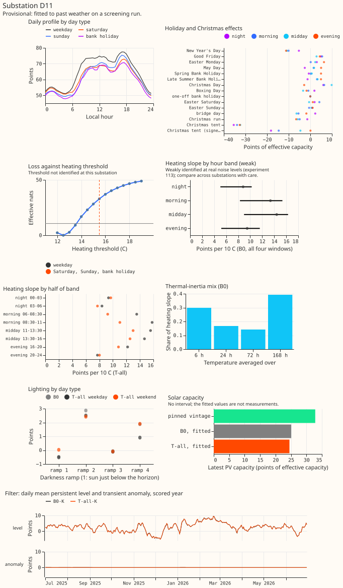
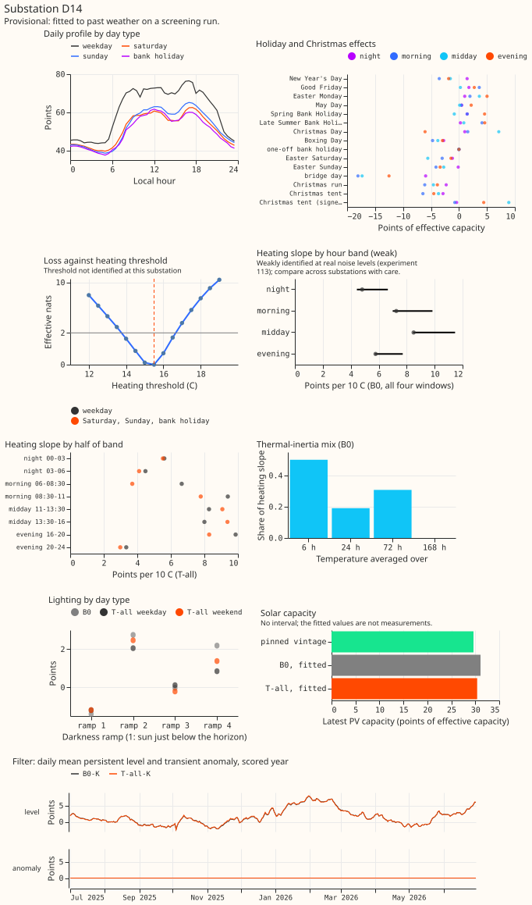
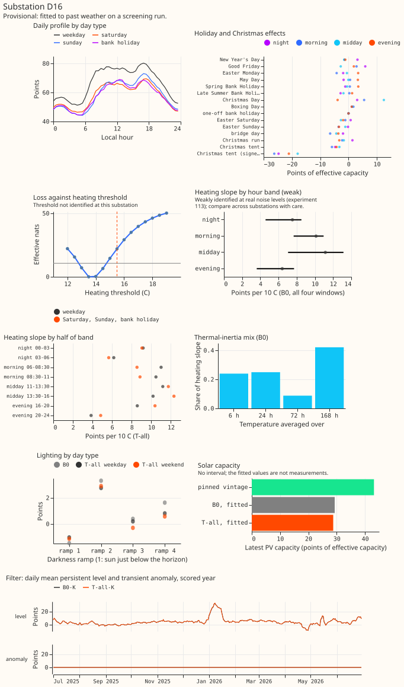
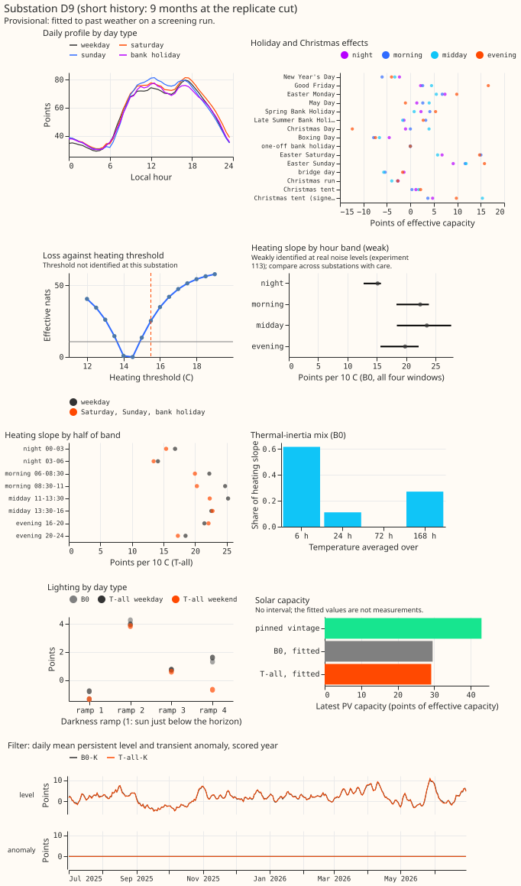
Sample weeks. Each figure shows one week per season of the scored year, chosen by one rule before any score was read: the week that starts on the second Monday of the season's middle month. B0-K sits beside T-all-K, with the median forecast, the 80% and 90% bands, and the observed power. The panels show whether the half-band gain is visible in a single week; at this scale it is not, because a gain of 0.04 points is under 2% of the score (2.255). Sample weeks are drawn for the 5 decision substations only; D9 has none.
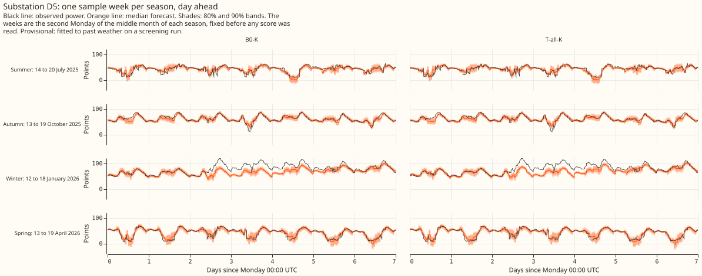
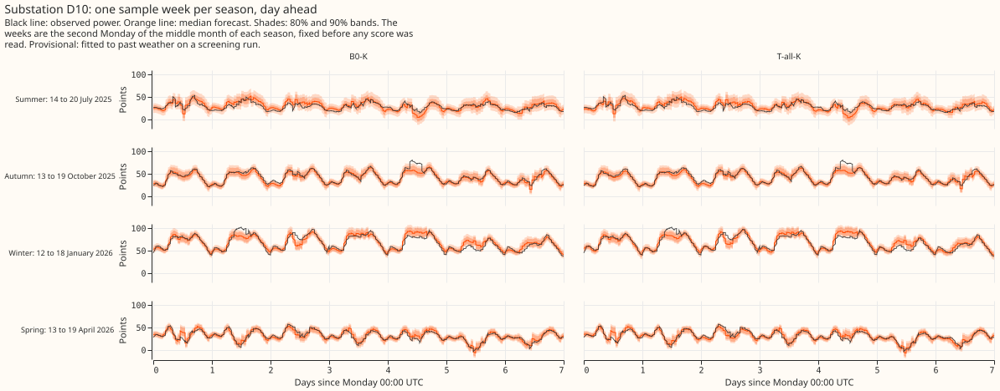
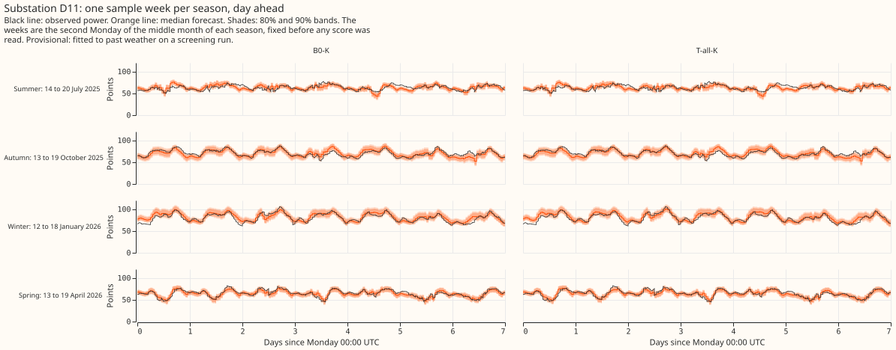
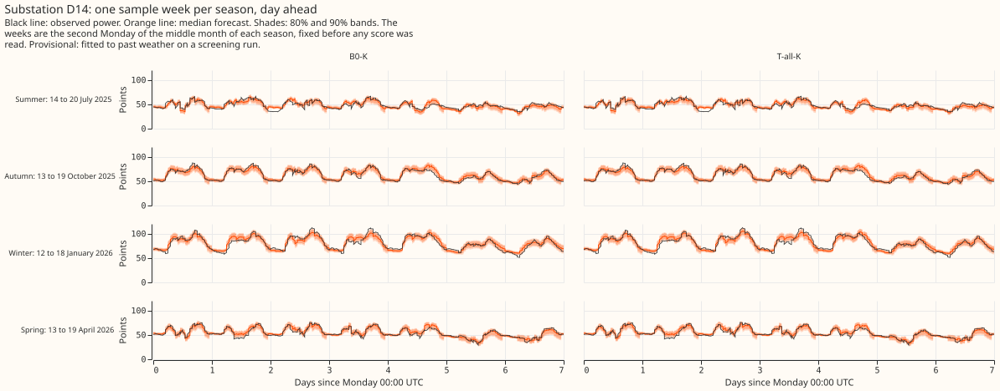
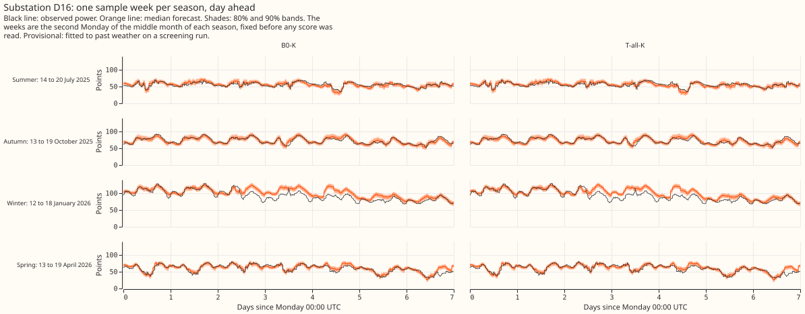
Numbers
Every number on this page is printed by e00114_report.py into report.txt.
- Arms and schedule: B0, T1, T2, T3, T-all, and H-site, each unfiltered and filtered, fitted at 2022-07-01 (the tuning year's replica), 2023-07-01 (tuning), 2024-07-01 (replicate), and 2025-07-01 (scored). One frozen fit per arm and cut, no refits, one seed, day-ahead (09:00 UTC origins). The screening tier's monthly refits would be a follow-up.
- Chosen settings (tuning year, filtered score): lambda 1 for T1, T2, and T-all (the weakest of 1, 100, and 10,000) and 10,000 for T3. New columns at lambda 1: about 42 effective degrees of freedom for T-all (median over the 5 substations).
- Absolute scores, scored year (points, 5 substations pooled): B0 2.884, B0-K 2.255, T-all 2.872, T-all-K 2.216, H-site 2.882, H-site-K 2.243. Replicate year: B0-K 2.261, T-all-K 2.223, H-site-K 2.240. Tuning year: B0-K 2.099, T-all-K 2.067, H-site-K 2.101.
- C1 (N3), T-all-K minus B0-K: scored -0.0387 (97.5% interval -0.0696 to -0.0140), 5 of 5
sites better; replicate -0.0384, 5 of 5; all rows including switching events -0.0428; November
to March -0.0540, April to October -0.0288. Label:
gain.- Beside: T-all minus B0 (unfiltered) -0.0119 (-0.0365 to +0.0116), 4 of 5 sites. T-all-K with B0's filter settings minus B0-K -0.0358 (-0.0601 to -0.0140), so the gain is not in the filter's settings (the filter-fit difference is -0.0029, -0.0120 to +0.0029).
- Exploratory (95%): T2-K -0.0396 (-0.0590 to -0.0232), 5 of 5 sites, replicate -0.0334; T1-K +0.0019 (-0.0058 to +0.0094); T3-K -0.0001 (-0.0002 to +0.00004).
- Leaving one site out: the estimate runs from -0.0296 (without D5, a
small gain) to -0.0470 (without D11), every interval stays below zero, and only the D5 case changes the label.
- C2 (N4), H-site-K minus B0-K: scored -0.0120 (-0.0296 to +0.0069), 5 of 5 sites better by
small amounts; replicate -0.0210, 5 of 5. Unfiltered -0.0023 (-0.0437 to +0.0405), 2 of 5.
Label:
tie(gate 3 passed, so the contrast is labelled). - D9, descriptive (scored year only): C1 -0.0130, C2 -0.0140.
- Gate 3 and the printing rule: tau 21.4 (15.9 to 30.4 across substations; experiment 113's 27). At the scored cut the arg-min and its 80% interval are D5 12.0 (11.75 to 14.75), D10 12.0 (11.75 to 12.75), D11 12.5 (11.75 to 13.75), D14 15.5 (13.25 to 16.25), D16 13.5 (11.75 to 14.75), and D9 14.5 (12.7 to 15.3). Only D10 passes the rule.
- Capacity check (descriptive): T-all with a fitted PV capacity minus B0 with a fitted capacity is -1.2 points at D5 down to -0.4 at D9 (every 80% interval lies within about -1.8 and -0.1): a small, systematic shift below B0's, under the 2-point flag, so no capacity move is flagged. The contrasts pin the capacity.
-
Tails, scored year, 5 substations (coverage, pinball):
Arm q01 q05 q95 q99 B0-K 0.0150, 0.1726 0.0536, 0.5832 0.9417, 0.5949 0.9837, 0.1813 T-all-K 0.0142, 0.1716 0.0531, 0.5758 0.9408, 0.5878 0.9838, 0.1798 H-site-K 0.0149, 0.1722 0.0530, 0.5799 0.9411, 0.5951 0.9831, 0.1826 Manual heuristic 0.0423, 0.2477 0.0614, 0.7616 0.9060, 0.9163 0.9333, 0.3553
The gain arm leaves tail coverage within 0.1 points of B0-K's, so no tail flag is raised.
Nominal coverage is 0.01, 0.05, 0.95, and 0.99.
- Reference contrasts (95%): B0-K minus Part 4's window arm with the filter (WK) -0.0118
(-0.0411 to +0.0049); minus Part 4's A2 -0.0201; minus lagless XGBoost with the filter -0.2412
(-0.3558 to -0.1221); minus the manual heuristic -1.2334 and climatology -1.8127.
Predictions against outcome
- C1 between -0.06 and +0.01 in both years: held (-0.039 and -0.038).
- T2-K carries most of any gain, in winter and in the morning and evening bands: held.
- T2-K's unfiltered gain at least twice its filtered gain: failed. The unfiltered gain (-0.013) is a third of the filtered one (-0.040). Explained by the warm and cold split under Checks.
- T1-K and T3-K within 0.02 points, filtered or not: held.
- Gate 2 passes, and no capacity move is flagged: held.
- N4 gate fails on width, B0's tau 10 to 40, no real substation passes the printing rule, the profile flat over 3 degrees C or more at 4 of 5 substations, arg-min at a grid edge at 1 or more: partly failed. The gate passed (median width exactly 3.0), tau was 21.4, and D10 passed the printing rule. No profile was flat over 3 degrees C, and the arg-min sat at the grid edge at D5 and D10.
- C2 between -0.04 and +0.03, replicate negative at 3 of 5 sites at most: partly held. C2 was -0.012, inside the predicted range, but the replicate was negative at 5 of 5 sites against a prediction of at most 3.
- B0-K within 0.06 of WK, run under 1.5 hours: held (-0.012). The stages together took about
20 minutes of wall clock on 6 cores (the work file times are in
report.txt).
Work this builds on
- Earlier experiments in the series: experiment 104 (Part 2) built the convex model and tuned its ridge; experiment 105 (Part 3) found that a neural-network interaction added nothing measurable, which is why N3 asks the question of the convex terms directly; experiment 106 (Part 4) built the Kalman filter and supplies the stored references (A2, WK, XGBoost, climatology, the manual heuristic); experiment 107 gave the 0.03-point sister contrast; experiment 103 chose the rows, cuts, and switching masks; experiment 45 supplies the pinned PV capacity; and experiment 87 fixed the 11 quantile levels of the score.
- Heating response in the literature: additive models of electricity demand with smooth, data-fitted terms are the closest published relatives of the convex model's heating terms, which use a hinge at a fixed threshold. Fasiolo et al. (2021) fit additive quantile regressions with calibrated inference, motivated by load forecasting. Obst et al. (2021) correct additive load models with Kalman filters, the same pairing as GAM-K and its recent-error filter. Neither paper's page states how temperature enters its model, so this page makes no claim about their temperature terms.
Caveats and choices made after the plan
- Past weather: both gains use ERA5 temperature at the target half-hour, an upper bound on skill with a live forecast. Part 6's calibration moved ENS temperature by -1.15 to +2.05 K and its filter gain on ENS was about two-thirds of Part 4's. Only an ENS confirmation with monthly refits tests transfer.
- One scored year plus a replicate, frozen fits, hindsight switching masks shared by every arm.
- Lambda sits at the weakest penalty tried for T1, T2, and T-all. A weaker penalty was not tried, and the tuning-year gain was still growing towards it.
- Edits to the plan. Test 1's tolerance for the fitted-value gap at lambda 10^10 went from 1e-6 to 1e-5 points, because development runs on the penalised solve alone showed a float64 floor of 0.8e-6 to 2.6e-6 points (12 of the 40 checks exceed 1e-6, none exceeds 2.6e-6); the plan commit is amended in its own commit, before the experiment's arms were fitted. Gate 2's amplitude rule is a post-tuning clarification, recorded only in this write-up: it was set on the gain attributable to the interaction (the gap to the true-parameter forecast under truth I, less the gap under truth 0), because the estimation error alone is about 0.1 points and the plan's wording would have chosen an amplitude near zero. It came after the tuning fits and the pilot draws, and before any replicate-year or scored-year row was read. T-all splits each heating column four ways, and its two difference penalties share one lambda.
- Placebo arms and the leave-one-out label check were added after the Opus audit, by
e00114_placebo.pyande00114_report.py. - Leaks, none reaching a scored row: the 2022-07-01 replica, which supplies the tuning year's spread, reads the 2023-08-07 capacity vintage, 13 months late; the 2023-07-01 cut has the 5-week vintage leak; D9's 2024-07-01 fit reads the 2025-04-14 vintage; the replicate year's filter spread is in sample for the filter's hyperparameters. The first day of the scored year (288 of 104,897 rows) is forecast from an issue time of 2025-06-30 09:00, after the fit's 2025-07-01 cut, for every arm alike.
- Run history:
e00114_fit.pyran twice (the predictions date from the first run, the profiles and coefficients from the second), and the stored predictions' manifests record the commit as dirty. A refit of three arms agrees with the stored sets to 4e-6 points. - Synthetic substations share the model's own form, so gates 2 and 3 cannot show a wrong PV shape.
- No new data-processing finding for
docs/ml-experiments/data-processing.md.
What to try next
- An ENS confirmation of T-all or of T2 alone as GAM-K's base, with Part 6's monthly refits.
A
gainon past weather becomes a candidate only after that run, which needs its own plan. - A threshold grid that reaches below 12 degrees C, to see where D5's and D10's minima lie before drawing any conclusion about the heating threshold.
- Combining T2 with the shape state of the filter (a later follow-up, outside this plan).